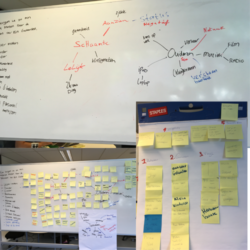
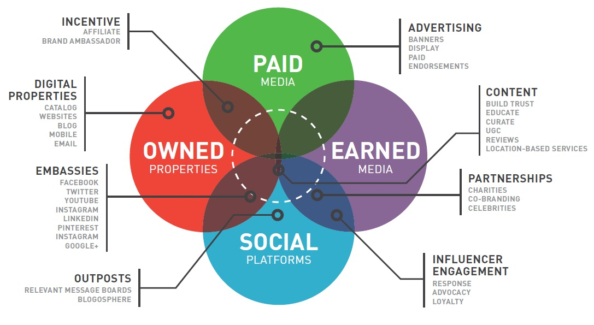
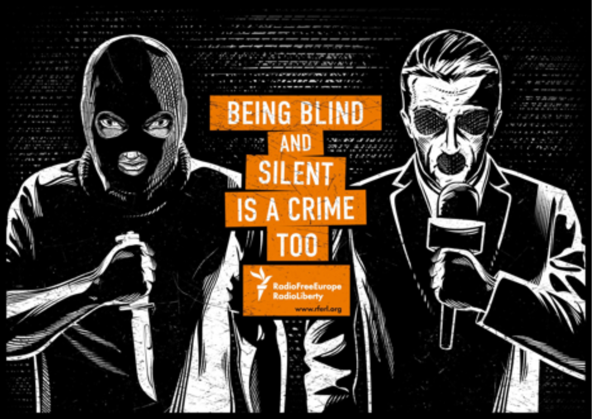

Inleiding
Hieronder vind je mijn opdrachten die ik heb gemaakt voor SCO, te beginnen met de criteria zoals in de rubrics beschreven, daar direct onder staan alle opdrachten met de dingen die ik heb geleerd aan de hand van de opdrachten.
Criteria
De communicatiestrategie is onderbouwd
De student kan de strategie onderbouwen op basis van onderzoek naar doelgroep, doelstellingen en boodschap en met de inzet van theoretische modellen waardoor de strategie de klantvraag (uit de briefing) beantwoordt.
Totstandkoming concept
De student heeft divergentie en convergentietechnieken gebruikt om te komen tot het creatieve concept. Het is begrijpelijk geformuleerd en gebaseerd op de ontwikkelde communicatiestrategie en beantwoord de klantvraag.
De mediastrategie is onderbouwd en bouwt verder op de communicatiestrategie
De door de student ontwikkelde mediastrategie is gebaseerd op de communicatiestrategie en het concept en bouwt hier duidelijk op voort om de klantvraag te blijven beantwoorden. De student heeft onderzoek gedaan naar de doelgroep en doelstellingen en dit onderzoek onderbouwt de inzet van middelen.
Executie van strategie en concept is beargumenteerd
De student heeft de gemaakte keuzes voor typografie, beeld en tekens, short copy en tone-of-voice uitgelegd en beargumenteerd vanuit merk, doelen, doelgroep, strategie en concept.
opdrachten
Communicatie strategie bepalen
 Bij het bepalen van de communicatiestrategie zijn we eerst goed gaan kijken naar wat de opdracht eigenlijk is, dit zijn we gaan doen met een briefing en een debriefing, dus eerst was er de briefing vanuit Olaf van Perplex, na deze briefing zijn we de debriefing gaan houden, dit om duidelijk te maken voor ons zelf wat nou eigenlijk de opdracht is denk dan aan wie is de doelgroep, wie zijn de concurrenten en wat is het product wat er gemaakt moet gaan worden. Aan de hand van dit alles zijn we een boodschap, propositie en een positionering gaan bepalen, dit om in te spelen op de “wensen” van de klant, maar vooral ook om ze op een manier aan te spreken die ze naar de winkel krijgt, dit hele proces is te bekijken in de PDF hiernaast
Bij het bepalen van de communicatiestrategie zijn we eerst goed gaan kijken naar wat de opdracht eigenlijk is, dit zijn we gaan doen met een briefing en een debriefing, dus eerst was er de briefing vanuit Olaf van Perplex, na deze briefing zijn we de debriefing gaan houden, dit om duidelijk te maken voor ons zelf wat nou eigenlijk de opdracht is denk dan aan wie is de doelgroep, wie zijn de concurrenten en wat is het product wat er gemaakt moet gaan worden. Aan de hand van dit alles zijn we een boodschap, propositie en een positionering gaan bepalen, dit om in te spelen op de “wensen” van de klant, maar vooral ook om ze op een manier aan te spreken die ze naar de winkel krijgt, dit hele proces is te bekijken in de PDF hiernaast
Wat heb ik geleerd
Van deze opdracht heb ik geleerd goed te kijken naar de opdracht, dus het briefen en debriefen om goed te bepalen wat de klant wil bereiken met de campagne, ook heb ik geleerd om goed te kijken wie je doelgroep precies is, het is lastig omdat je heel veel aannames hebt over bijvoorbeeld 50 plussers die niet waar zijn, maar het belangrijkste wat ik geleerd heb is goed te luisteren, luisteren naar de doelgroep, luisteren naar de klant, ook is het erg belangrijk om het goed te documenteren.
Ideeën genereren / van idee naar concept
Aan de hand van de workshop ideeën genereren hebben we 5 brainstormtechnieken gekozen, aan de hand van deze brainstormtechnieken zijn we ideeën gaan genereren.
- Mindmappen
- Lunchwandelen
- Raadpleeg de buren
- Beelddenken
- Staand vergaderen
Na het kiezen zijn we hiermee aan de slag gegaan, de eerste mindmapping heb ik al vaker gebruikt tijdens andere projecten, het voordeel hiervan vind ik dat je verder gaat kijken dan je neus lang is, de tweede lunchwandelen is voor erg waardevol gebleken in het ideeën genereren voor de proftaak, we kwamen hier vaak tot andere inzichten die ons hebben geholpen om progressie te boeken, raadpleeg de buren hebben we niet veel gebruikt en er is natuurlijk een competitie binnen de klas, dus dit werd ook niet altijd geapprecieerd, beelddenken heeft ons veel geholpen met het visualiseren van onze ideeën, hierdoor ben ik vaak tot andere inzichten gekomen dan we voorheen hadden, en de laatste staand vergaderen is iets wat goed is om te doen, het heeft ee beetje hetzelfde effect als lunchwandelen, even van je plek, even wat bloed door het lichaam doet wonderen.
Wat heb ik geleerd
Van het gedeelte concepten heb ik geleerd dat het goed werkt om andere invalshoeken te bekijken, in de klas zaten we als groep vaak vast als het gaat om inspiratie, maar na een wandeling of het verplaatsen van werkplek kwam ik vaak op hele andere ideeën als voor de wandeling.
Mediastrategie bepalen
De mediastrategie hebben we bepaald aan de hand van een aantal zaken, zo zijn we gaan kijken naar de customer journey en gaan kijken naar het paid owned earned model, deze hebben we samen gecombineerd om te komen tot ons eigen model. We hebben eerst gekeken naar hoe we awareness konden creëren en welke middelen we daarvoor wilden gebruiken, hier hebben we gekozen voor radio, huis aan huis reclame, Google adwords, de Specsavers nieuwsbrief en Facebook de keuze hiervan hebben we beschreven in de mediastrategie in deze PDF, dan komt de consideration fase hier komen de mensen op onze landing page terecht waar ze dus geïnspireerd moeten raken om zo aan de komen bij de purchase fase, hier komen mensen dus op de website of in de winkel terecht, en daarna aan de hand van inschrijven voor de nieuwsbrief word de loyalty fase betrokken in het verhaal.

Wat heb ik geleerd
Door het maken van de mediastrategie ben ik beter gaan kijken naar het inzetten van verschillende media en vooral op welk moment je welke media inzet, ook heb ik geleerd om eerst goed te kijken waar de doelgroep actief is dit om de doelgroep op de meest optimale manier te benaderen de keuze hiervan is allemaal beschreven in de PDF van de media strategie, daarnaast heb ik geleerd te kijken naar de kosten van een campagne hier heb ik geleerd dat sommige media niet rendabel zijn voor de desbetreffende campagne.
Posters
De laatste opdracht was het maken van een poster serie voor Specsavers, hier had ik mijn eerste ervaring met semiotiek, dit vond ik een erg interessant deel van de lessen SCO, het analyseren van een poster in lastiger dan ik dacht en ik ben hier tot andere inzichten gekomen als het gaat om het ontwerpen van posters voor een campagne, bij het maken van mij posters ben ik naar 4 verschillende zaken gaan kijken, de eerste is beeldgebruik, de beelden die ik gebruikt heb slaan op de manier hoe onze campagne is vormgegeven, mooie heldere beelden van geluiden die of ervaringen die je zou kunnen missen, de tweede is typografie, dit is iets waar we al vaker naar hebben gekeken, het belangrijkste vond ik hier dat het duidelijk leesbaar moest zijn maar oom dat het prettig oogde, daarom hebben ik gekozen voor het lettertype Radikal een sans serif lettertype dat ik in bold en regular heb gebruikt op de poster, regular voor de normale tekst en de bold variant om de nadruk te leggen, daarna ben ik gaan kijken naar short copy dit was ik in eerste instantie vergeten te doen, maar na de les en het commentaar op mijn posters heb ik short copy gebruikt om de nadruk te leggen op het te missen geluid, de tone of voice komt terug in onze gehele campagne en hierin word de pay off (geef kleur aan de gehoor) van de campagne ook meegenomen, druk op de posters voor de PDF.

Wat heb ik geleerd
Hierboven heb ik al een aantal zaken genoemd als het gaat om wat ik heb geleerd, maar ik denk dat ik het meeste heb geleerd van het analyseren van de andere posters, dus wat de betekenaar, betekende en betekenis is bij een poster, de opdracht heb ik gedaan bij de poster hiernaast.
Betekenaar
Mes, Microfoon, Bivakmuts, Boef, Presentator, Duisternis
Betekende
Er wordt verwezen naar een crimineel en naar een presentator.
Betekenis
De betekenis van de poster gaat over het feit dat als je als media blind en stil bent dat je ook medeplichtig bent aan het gepleegde feit.